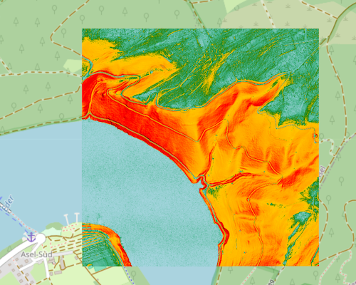

Geländerauheit
Die Geländerauheit ist ein geomorphometrisches Maß, das die maximale lokale Unebenheit des Geländes quantifiziert. Zur Berechnung der Geländerauheit wird für jeden Punkt die größte Höhendifferenz zwischen dem höchsten und dem niedrigsten Höhenwert innerhalb eines 3x3-Messpunkte-Fensters (entspricht bei DGM1 einem 3x3-Meter-Ausschnitt) ermittelt.
Eine hohe Geländerauheit weist auf eine sehr abrupte und ausgeprägte lokale Höhenänderung hin, wie sie an Kanten, Felsvorsprüngen oder sehr steilen, stufigen Hängen vorkommt. Bei hochauflösenden DGM1-Höhendaten ermöglicht die Geländerauheit detaillierte Einblicke in extrem feine, scharfe und abrupte Geländeformen. Zu den wichtigsten Anwendungsbereichen gehören:
- Detaillierte Geomorphologische Analyse von Steil- und Felsstrukturen: Abbildungen zur Geländerauheit heben sehr scharfe Höhenänderungen hervor, die auf Felswände, Überhänge oder ausgeprägte Absätze im Gelände hindeuten.
- Risikobewertung und Naturgefahren: Bereiche mit sehr hoher Geländerauheit sind prädestiniert für Felsabgänge. Die 1m-Auflösung ermöglicht die Identifikation einzelner Felsblöcke oder instabiler Kanten. Auch die Analyse von Erdrutschgebieten und die Bewertung der Lawinengefahr profitieren von detaillierten Rauigkeitsdaten.
- Ingenieurwesen, Bauwesen und Infrastrukturplanung: Die Geländerauheit hilft, Bereiche mit extremen Höhenunterschieden auf kleinster Skala zu identifizieren, die zusätzliche Maßnahmen bei Fundamentierung oder Aushub erfordern (z.B. große Felsblöcke, die entfernt werden müssen). Auch die Planung von Trassen für Pipelines oder Straßen in schwierigem Gelände kann optimiert werden.
- Land- und Forstwirtschaft: Die Zugänglichkeit für schwere Geräte und die Planung von Rückewegen können durch die Erkennung sehr rauer Kleinstrukturen verbessert werden.
- Outdoor-Sport und militärische Anwendungen: Die Geländerauheit ermöglicht eine präzise Routenplanung für Kletterer, Bergsteiger und Wanderer durch Kennzeichnung von Klippen oder Blockfeldern. Für militärische Zwecke kann er die Mobilität im Gelände bewerten und Engpässe identifizieren.
- Hydrodynamische Modellierung auf Mikroebene: Geländerauheit in und um kleine Bachbetten oder Entwässerungsrinnen können wichtige Informationen über die Sohlrauigkeit und damit den Strömungswiderstand liefern, was für die detaillierte Modellierung von Strömungsgeschwindigkeiten relevant ist.
Wichtig: Die Geländerauheit bewertet die maximale lokale Höhendifferenz. Eine flache Ebene kann rau sein (viele kleine, aber maximal unterschiedliche Unebenheiten), während ein steiler, aber glatter Hang eine niedrigere Geländerauheit aufweisen kann als eine zerklüftete, aber insgesamt weniger steile Fläche.
Berechnungsgrundlage
Die Geländerauheit wird als die Differenz zwischen dem höchsten und dem niedrigsten Höhenwert innerhalb des 3x3-Messwerte-Fensters definiert.
Die Formel lautet:
Geländerauheit = Zmax - Zmin
Dabei ist Zmax der höchste Höhenwert und Zmin der niedrigste Höhenwert innerhalb des 3x3-Messwerte-Fensters um den zentralen Punkt.
Wertebereiche der Geländerauheit bei DGM1
Die theoretischen Werte der Geländerauheit reichen von 0 Meter bis zu den maximal möglichen Höhendifferenzen innerhalb eines 3x3-Meter-Fensters in der deutschen Landschaft.
Minimum (0 Meter): Ein Wert von 0 würde bedeuten, dass alle Höhenwerte im 3x3-Fenster identisch sind. Dies ist bei realen Geländedaten extrem selten, da selbst auf scheinbar "flachen" Oberflächen minimale Höhenunterschiede (z.B. durch kleine Unebenheiten, Messrauschen) existieren. Im Idealfall einer perfekt planen Fläche wäre die Geländerauheit 0.
Maximum: Das Maximum hängt stark von der Topographie ab. In Deutschland können die Höhendifferenzen in einem 3x3-Meter-Fenster (entspricht 9 DGM1-Pixeln) erheblich variieren.
Flache Gebiete (z.B. Norddeutsche Tiefebene, Ackerland): In sehr flachen Bereichen werden die Geländerauheit-Werte typischerweise im Bereich von wenigen Zentimetern bis zu vielleicht 1-2 Metern liegen. Hier würden kleine Geländemulden, Ackerfurchen, leichte Böschungen oder kleine künstliche Erhebungen (z.B. ein Maulwurfshügel, ein liegender Baumstamm) die Rauheit ausmachen.
Hügeliges Gelände (z.B. Mittelgebirge, Voralpenland): Hier können die Geländerauheit-Werte schon deutlich höher ausfallen. In einem 3x3-Meter-Fenster könnten kleine Felsen, steilere Hanganschnitte, Bachufer oder umgestürzte Bäume zu Höhendifferenzen von mehreren Metern (z.B. 2-5 Meter) führen.
Extrem zerklüftetes Gelände (z.B. Steilhänge, Felsformationen): Obwohl Deutschland keine Hochgebirge hat, können in sehr steilen Felswänden oder stark erodierten Schluchten (z.B. in manchen Teilen des Elbsandsteingebirges oder alpinen Vorgebirgen) auf einer 3x3-Meter-Fläche auch 5 Meter und mehr an Höhendifferenz auftreten, wenn ein Pixel direkt auf einem Felsvorsprung und ein anderes in einer Spalte liegt. Dies ist jedoch die Ausnahme.
Klassifikation der Wertebereiche (beispielhaft):
Die Klassifikation von Geländerauheit-Werten ist stark an den Anwendungsbereich und die typische Topographie des Untersuchungsgebiets gebunden. Es gibt keine universell gültigen Schwellenwerte, da "rau" in der Norddeutschen Tiefebene etwas völlig anderes bedeutet als in den Alpen.
Hier sind jedoch beispielhafte Klassifikationen, die man bei DGM1-Daten anwenden könnte, basierend auf typischen Landschaftsformen in Deutschland:
Sehr Geringe Rauheit (Nahezu eben):
- Wertebereich: Geländerauheit < 0.2 Meter (20 cm)
- Interpretation: Sehr flache, ebene Flächen wie frisch geegte Felder, große asphaltierte Flächen (ohne starke Neigung), oder flache Gewässerufer. Minimale oder kaum wahrnehmbare Höhenunterschiede.
Geringe Rauheit (Leicht uneben):
- Wertebereich: 0.2 Meter ≤ Geländerauheit < 0.5 Meter (20 - 50 cm)
- Interpretation: Typisch für Ackerland mit Furchen, Weideland, leicht geneigte Wiesen, sehr flache Böschungen, Parkflächen mit kleinen Unebenheiten. Geringe, aber wahrnehmbare Geländeunregelmäßigkeiten.
Mittlere Rauheit (Deutlich uneben):
- Wertebereich: 0.5 Meter ≤ Geländerauheit < 2.0 Meter (50 cm - 2 Meter)
- Interpretation: Häufig in Mittelgebirgsregionen, Waldgebieten mit umgestürzten Bäumen oder kleinen Felsen, Uferbereiche von Bächen und Flüssen mit kleinen Erosionskanten, Bereiche mit einzelnen Gebäuderesten (wenn nicht aus dem DGM1 gefiltert). Hier sind die Höhenunterschiede bereits deutlich sichtbar und beeinflussen die Begehbarkeit.
Hohe Rauheit (Stark zerklüftet):
- Wertebereich: 2.0 Meter ≤ Geländerauheit < 5.0 Meter (2 - 5 Meter)
- Interpretation: Steilere Hangbereiche, kleinere Steinbrüche, bewaldete Steilhänge mit Felsaufschlüssen, erodierte Schluchten, sehr unwegsames Gelände. Solche Bereiche sind oft schwierig zu begehen.
Sehr Hohe Rauheit (Extrem zerklüftet):
- Wertebereich: Geländerauheit ≥ 5.0 Meter
- Interpretation: Sehr steile Felswände, aktive Steinbrüche, stark erodierte Klippen oder extreme Abbruchkanten. Diese Bereiche sind typischerweise nur punktuell in Deutschland zu finden und repräsentieren extreme vertikale Variationen auf kleinstem Raum.
Typische Landschaften und deren Rauheit
| Geländerauheit (m) | Beschreibung | Charakteristika und Beispiele | Lage in Deutschland |
|---|---|---|---|
| 0.0 - < 0.2 | Sehr Geringe Rauheit (Nahezu eben) |
Sehr glatte Oberflächen, kaum wahrnehmbare Höhendifferenzen.
Beispiele: Flussauen, sehr große Ackerflächen, große Parkplätze, Sportplätze, Seen/Wasseroberflächen. |
Elbtalaue (z.B. Brandenburg, Sachsen-Anhalt, Niedersachsen), Teile der Lüneburger Heide (Niedersachsen), Rheinebene (z.B. Baden-Württemberg, Rheinland-Pfalz), Bodensee-Uferbereiche (Baden-Württemberg). |
| 0.2 - < 0.5 | Geringe Rauheit (Leicht uneben) |
Leichte, aber spürbare Höhendifferenzen, fein texturiert.
Beispiele: Sanfte Hügel, Ackerflächen mit feiner Bodenbearbeitung, große Rasenflächen, leicht unebene Wege, subtile Geländewellen. |
Brandenburg (abseits der Auen), Münchner Schotterebene (Bayern), Teile des Kraichgaus (Baden-Württemberg), Niederrheinische Bucht (Nordrhein-Westfalen). |
| 0.5 - < 2.0 | Mittlere Rauheit (Deutlich uneben) |
Deutlich wahrnehmbare Unebenheiten und lokale Geländeformen, anstrengend beim Begehen.
Beispiele: Waldgebiete mit moderatem Unterholz und Wurzelstöcken, kleinere Felsbrocken, leicht erodierte Bereiche, kleinere Gräben, Dämme, kleinteilige städtische Bereiche (z.B. alte Stadtkerne mit Treppen, Absätzen). |
Mittelgebirgsvorländer (z.B. Schwarzwaldrand, Harzvorland, Erzgebirgsvorland), Schwäbische Alb (Baden-Württemberg), Teile des Sauerlands (Nordrhein-Westfalen). |
| 2.0 - < 5.0 | Hohe Rauheit (Stark zerklüftet) |
Starke lokale Höhenunterschiede, markante Geländeformen, erfordert Trittsicherheit.
Beispiele: Gebiete mit vielen großen Felsbrocken, Blockhalden, stark erodierten Hängen, komplexes Waldgelände mit Windwürfen, kleinere felsige Aufschlüsse, ausgeprägte Gräben, Böschungen von Baugruben und kleineren Steinbrüchen. |
Sächsische Schweiz (Sachsen), Teile des Harzes (Sachsen-Anhalt, Niedersachsen), Bayerischer Wald (Bayern), Eifel (Rheinland-Pfalz). |
| ≥ 5.0 | Sehr Hohe Rauheit (Extrem zerklüftet) |
Maximale lokale Zerklüftung, abrupte Höhenwechsel, oft vertikale oder überhängende Formen.
Beispiele: Steile Felswände, massive Blockschuttfelder, tiefe, enge Schluchten, Klippen, aktive Steinbruchbereiche, sehr steile künstliche Abbruchkanten (Autobahnen, große Bauwerke). |
Alpen (Bayerische Alpen, z.B. Wettersteingebirge, Berchtesgadener Alpen), Große aktive Steinbrüche (bundesweit), Schluchten in Mittelgebirgen (z.B. Partnachklamm, Höllentalklamm in den Alpen, Wutachschlucht im Schwarzwald). |
Wertebereich zu Farbe
Aus den Höheninformationen werden RI-Werte errechnet. Zusätzlich definiert der Benutzer eine Farbsteuerdatei für Wertebereiche und Farben. Welche Farben und Wertebereiche sinnvoll sind, ist vom jeweiligen Anwendungsfall und von der Geländebeschaffenheit des Untersuchungsgebiets abhängig. Es empfiehlt sich, die Verteilung der RI-Werte (z. B. über ein Histogramm) zu analysieren, um eine passende Klassifizierung zu finden. Soll ein Wertebereich nicht dargestellt werden, wählt man eine volltransparente Farbe.
Beispiel für eine Farbsteuerdatei
| Rauheit | RGBA | Farbe | Farbname |
|---|---|---|---|
| 0.00 | 173 216 230 255 |
|
Hellblau |
| 0.20 | 57 176 130 255 |
|
Grün |
| 0.35 | 28 126 0 255 |
|
Dunkles Grün |
| 0.50 | 255 200 0 255 |
|
Goldgelb |
| 1.25 | 255 165 0 255 |
|
Leuchtendes Orange |
| 2.00 | 255 0 0 255 |
|
Leuchtendes Rot |
| 3.50 | 180 0 0 255 |
|
Dunkelrot |
| 5.00 | 0 0 0 255 |
|
Schwarz |
| nv | 0 0 0 0 |
|
Transparent |
Geländerauheit versus Schummerung
Geländerauheit für eine Datenkachel am Edersee (Hessen).
Die Geländerauheit bewertet die maximale lokale Höhendifferenz und somit abrupte, scharfe Änderungen im Gelände, unabhängig von der allgemeinen Hangneigung. Eine flache Ebene kann rau sein (d.h. viele kleine, aber extreme Unebenheiten aufweisen), während ein steiler Hang glatt sein kann.
Es gibt also keinen direkten Zusammenhang zwischen den Abbildungen 'Geländerauheit' und 'Schummerung'. Die Abbildung der Schummerung dient einzig der Orientierung und der visuellen Vergleichbarkeit.

Schummerung für eine Datenkachel am Edersee (Hessen).
Abgrenzung von Geländerauheit und TRI
Der Terrain Ruggedness Index (TRI) und die Geländerauheit (Roughness Index, RI) sind beides geomorphometrische Maße, die die Unebenheit des Geländes quantifizieren, unterscheiden sich jedoch in der Art und Weise, wie sie diese Unebenheit erfassen und betonen.
Der Hauptunterschied liegt in ihrer Berechnungsmethode und der Art der Geländehomogenität, die sie hervorheben:
- Terrain Ruggedness Index (TRI): Der TRI, basierend auf dem Riley-Algorithmus, misst die Heterogenität oder Unebenheit des Geländes, indem er für jeden Punkt die absolute Höhenänderung zu seinen acht direkten Nachbarpunkten berechnet. Ein hoher TRI-Wert weist auf ein raues, unebenes Gelände hin, während ein niedriger Wert eine ebene oder glatte Oberfläche anzeigt. Der TRI bewertet die Oberflächentextur und -heterogenität, unabhängig von der allgemeinen Hangneigung. Eine flache Ebene kann "rau" sein (viele kleine Unebenheiten), während ein steiler Hang "glatt" sein kann.
- Geländerauheit (Roughness Index, RI): Die Geländerauheit quantifiziert die maximale lokale Unebenheit des Geländes. Sie wird berechnet, indem für jeden Punkt die größte Höhendifferenz zwischen dem höchsten und dem niedrigsten Höhenwert innerhalb eines 3x3-Messpunkte-Fensters ermittelt wird (Zmax - Zmin). Eine hohe Geländerauheit weist auf sehr abrupte und ausgeprägte lokale Höhenänderungen hin, wie sie an Kanten, Felsvorsprüngen oder sehr steilen, stufigen Hängen vorkommen. Die Geländerauheit bewertet die maximale lokale Höhendifferenz, ebenfalls unabhängig von der allgemeinen Hangneigung.
Zusammenfassend lässt sich sagen, dass der TRI ein Maß für die durchschnittliche Variabilität der Höhen innerhalb einer lokalen Umgebung ist, das die allgemeine "Zerklüftung" oder "Textur" des Geländes anzeigt. Die Geländerauheit hingegen identifiziert die extremsten lokalen Höhenunterschiede, also scharfe Kanten, Abbrüche oder einzelne, markante Unebenheiten.
Der TRI eignet sich besonders für Anwendungen, bei denen die Gesamthäufigkeit und Verteilung kleinerer bis mittlerer Unebenheiten relevant ist, und nicht nur die extremsten. Er bietet detaillierte Einblicke in die Geländebeschaffenheit, insbesondere in Verbindung mit hochauflösenden DGM1-Höhendaten.
Die Geländerauheit ist prädestiniert für Anwendungen, bei denen die Identifikation von abrupten, scharfen und potenziell gefährlichen oder hinderlichen Geländeelementen im Vordergrund steht. Sie hebt extreme lokale Höhenunterschiede hervor.
Dienst Kolorierung
Über den Dienst Kolorierung können Farbsteuerdateien definiert, eingelesen, editiert und gespeichert werden.